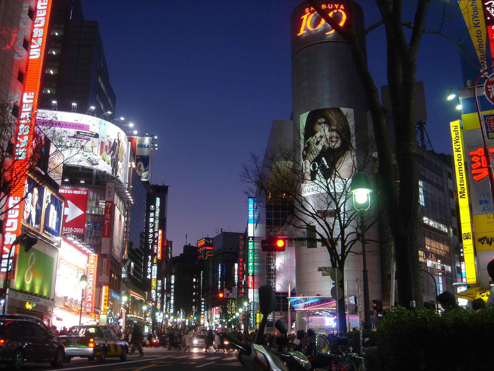
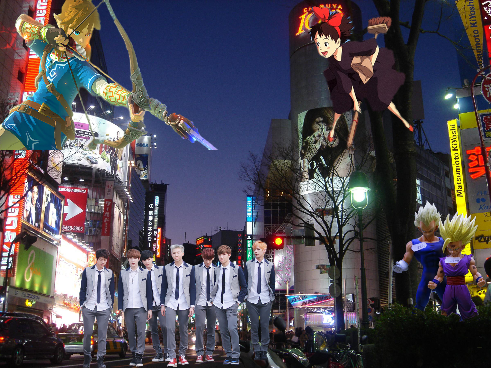

Here is where you will learn the process of how I completed my Self portrait project and how we went from the first image to the second one.
The first step to any project is figuring out exactly what your going to do. The first thing I did was look for an image to place in the background. I went through several images of Tokyo, Japan until I found the one that I could easily work with when I'm placing the other images into the project. Also, choosing the perfect background, contributed to what images I was going to use in the foreground. It had a big enough open space to place at least four images inside of without it looking to crowded or unnatural.
The second step was finding all of the images I wanted to place in the foreground of the photo. Some of the images I used weren't free copyright based so I saved the links to make sure I give credit to the original creator. I decided to focus on my love of video games, anime, and music. For the video game image, I debated between using Mario or Link. I searched for many images until I came across one that I felt I could easily place somewhere along the background.
The image of Link getting ready to fire his arrow, gave me many ideas on where to place him along the image. I used the lasso tool and the masking tool in photoshop in order to have Link look natural and blend him into the background image.
The photo of BTS was a little bit more complicated seeing as it had more characters in it than the image of Link. The process however was the same when using the lasso tool and masking tool in order to get the specific part of the photo I wanted. I ran into a few issues with when using the lasso tool. I had accidentally deleted too much of the image at one point and had to back track until it was perfect. Once I had the part of the image I wanted to keep, I placed it at the bottom of the background to make it seem as if they were walking down the street. As for the image of Vegeta and Gohan, it consisted of mostly of the two figures so I didn't really need to do much to the image when using the lasso tools. I felt it would be interesting to place them in the bushes of the background as if they were popping out of it. I noticed that where I placed them was diagonal to Link and it looked as if he was firing his arrow at the two figures, giving the scene a very creative and artistic feel.
The last step to the process was making sure that I saved the file and exported it in the right format before submission. Since I did the project in Photoshop, I was able to save the image as a JPEG. After saving it, I submitted it to the class website. I decided to go back and edit the photo after submission and even added an extra character to the image. The other character I added was Kiki from the movie Kiki's Delivery Service. The her processing was the same as all the other images and I decided to position her oppisite from Link. After which I saw that with her facial expression and the way she was angled, it looked as if she was admiring BTS ans the walked down the street. I found her addition to be a perfect on compared to the previous image.
